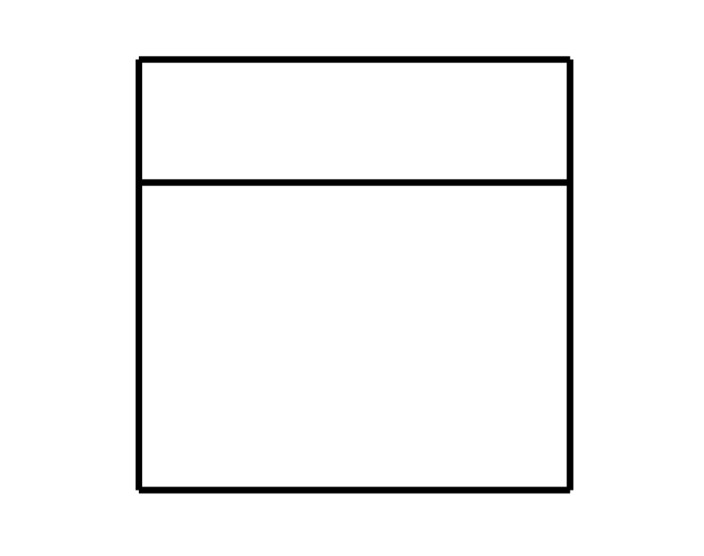
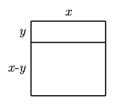

OSK Matematika SMA Tahun 2024
Kemampuan Dasar
Sebuah persegi dibagi menjadi $2$ persegi panjang, seperti terihat pada gambar. Diketahui hasil penjumlahan kedua keliling persegi panjang tersebut adalah $60$, maka luas persegi adalah ...

Kita misalkan sisi persegi adalah $x$ dan salah satu sisi persegi panjang sebagai $y$ seperti pada gambar di bawah ini.
Maka jumlah kelilingnya dapat kita nyatakan $$\begin{align*}
2(x+y)+2((x-y)+x)&=60\\
2x+2y+2x-2y+2x&=60\\
6x&=60\\
x&=10
\end{align*}$$ Jadi luas persegi adalah $x^2=100$.

Diketahui ada $6$ pilihan jalan yang dapat digunakan untuk berpergian dari kota $A$ ke kota $B$ dan ada $8$ pilihan jalan yang dapat digunakan untuk berpergian dari kota $B$ ke kota $C$. Jika seseorang akan berpergian dari kota $A$ ke kota $C$ melalui kota $B$ dan pulang kembali lagi ke kota $A$ melalui jalan-jalan yang berbeda dari ketika saat pergi, banyaknya cara memilih jalan yang dapat dilalui adalah ...
Kita buat slot untuk berangkat dan pulang dari kota \(A\) ke \(B\).
Begitu juga untuk berangkat dan pulang dari kota $B$ ke $C$.
Maka total kemungkinan jalan untuk berangkat dan pulang adalah $30\times 56=1680$.
| Berangkat | Pulang | Total |
|---|---|---|
| 6 | 5 | 30 |
| Berangkat | Pulang | Total |
|---|---|---|
| 8 | 7 | 56 |
Pada papan tertulis $90$ bilangan asli $1, 1, \cdots , 1, a, b$ (ada sebanyak $88$ bilangan $1$). Hasil penjumlahan seluruh bilangan di papan adalah $A$ dan demikian juga hasil perkalian semua bilangan di papan adalah $A$. Nilai $A$ adalah ...
Perhatikan bahwa $A=88+a+b=ab$. Akibatnya $$\begin{align*}
ab&=88+a+b\\
ab-a-b&=88\\
(a-1)(b-1)&=89
\end{align*}$$
Karena 89 merupakan bilangan prima maka pasti satu diantara $a-1$ atau $b-1$ adalah $1$. Tanpa mengurangi keumuman $a=2$. Jadi $A=ab=2(90)=180$.
Misalkan $a, b$ bilangan bulat positif yang tidak memiliki faktor persekutuan positif selain $1$. Jika berlaku $\dfrac{1 + 2 + 3 + · · · + 104}{3 + 4 + 5 + · · · + 106}=\dfrac{a}{b}$, maka nilai $a + b$ adalah ...
Perhatikan bahwa $$\begin{align*}
\dfrac{a}{b}&=\dfrac{1 + 2 + 3 + · · · + 104}{3 + 4 + 5 + · · · + 106}\\
&=\dfrac{\frac{104\times 105}{2}}{\frac{(3+106)\times 104}{2}}\\
&=\dfrac{105}{109}
\end{align*}$$
Karena $\dfrac{105}{109}$ sudah tidak dapat disederhanakan lagi maka $a=105$ dan $b=109$. Jadi $a+b=105+109=214$.
Bilangan $OSK$ adalah bilangan $4$ angka yang tidak dimulai dengan angka $0$ dan hasil penjumlahan semua digitnya adalah $8$. Sebagai contoh, $2024$ merupakan bilangan $OSK$. Banyaknya bilangan $OSK$ adalah ...
Misalkan $x_1$ adalah digit pertama dari bilangan $OSK$ tersebut. Begitu juga $x_2,x_3,$ dan $x_4$ adalah berturut-turut digit kedua, ketiga, dan keempat. Maka banyaknya solusi sama dengan banyak kemungkinan dari persamaan $$x_1+x_2+x_3+x_4=8$$ dengan syarat $x_1\ge 1$ dan $x_2,x_3,x_4\ge 0$. (Hati-hati, fakta ini hanya berlaku ketika jumlah digitnya kurang dari 10.) Selanjutnya kita transform lagi masalah ini menjadi masalah bintang dan batang. Seperti halnya kita mau bagikan $8$ bintang ke dalam $4$ ruang yang dibatasi $3$ batang. Karena ada syarat $x_1\ge 1$, maka kita harus bagikan $1$ bintang terlebih dahulu kepada $x_1$. Sehingga bintang yang bebas untuk dibagikan sekarang adalah $7$ bintang. Artinya kita dapat hitung menggunakan rumus permutasi dengan beberapa objek yang sama (7* 3| atau *******|||). Jadi $\dfrac{10!}{7!3!}=\dfrac{10\times 9\times 8}{3\times 2}=120$.
Misalkan $u_1, u_2, u_3, \cdots$ suatu barisan geometri dengan $u_1>u_2$. Jika $u_2 = 8$ dan $u_5 + u_7 =\dfrac{17u_6}{4}$. Nilai dari $u_1$ adalah ...
Diberikan segiempat $ABCD$ dengan luas segitiga $AED$ sama degnan luas segitiga $BEC$. Jika $AB = 50, AE = 45,$ dan $AC = 108$, maka $CD$ adalah ...
Banyak bilangan dua digit $\overline{ab}$ dengan $a,b\ne 0$ sehingga $\overline{ab}+\overline{ba}$ merupakan kelipatan $66$ adalah ...
Misalkan $k$ adalah bilangan bulat positif terkecil kelipatan $2034$ yang memiliki $28$ faktor positif. Sisa hasil bagi $k$ oleh $100$ adalah ...
Misalkan $x, y$ bilangan real positif dengan $x>y$. Jika diketahui bahwa $x^2 + y^2 =\dfrac{545}{272}xy$, maka $\dfrac{x+y}{x-y}$ adalah ...
Kemampuan Lanjut
Suatu segienam beraturan disisipkan kedalam sebuah persegi panjang seperti terlihat pada gambar dibawah ini. Jika luas $A$ dan $B$ berturut-turut adalah $24$ dan $23$, maka luas segienam beraturan adalah ...
Banyak himpunan bagian $A$ dari $\lbrace 24, 25, 26, \cdots , 35\rbrace$ sehingga hasil penjumlahan unsur terbesar dan terkecil dari $A$ sama dengan $59$ adalah ...
Untuk setiap bilangan asli $n$, misalkan $f (n)$ menyatakan faktor ganjil terbesar dari $n$ dan $p(n) = f (n) + f (n + 1) + \cdots + f (2n)$. Jika $p(n) = 8145$, maka $n$ adalah ...
Diberikan suku banyak $P (x) = x^3 + Dx^2 + Ex + 1$ dan $P (−1) = 4$. Jika $a, b, c$ merupakan akar-akar dari $P (x) = 0$ dan memenuhi $(a^2 − bc)(b^2 − ca)(c^2 − ab) = 40$. Maka nilai dari $(D + E)^2$ adalah ...
Banyaknya barisan bilangan bulat positif dengan enam suku $a_1, a_2, a_3, a_4, a_5, a_6$ yang mungkin sehingga $1 \le a_1, a_2, a_3, a_4, a_5, a_6 \le 4$ dan tidak ada dua suku berurutan yang jumlahnya $4$ adalah ...
Diberikan sebuah segitiga $ABC$ yang siku-siku pada sudut $B$. Lingkaran $\omega$ merupakan lingkaran dalam segitiga $ABC$ yang menyinggung sisi $BC$ pada titik $D$. Titik $E$ terletak pada $\omega$ sehingga $P E$ merupakan diameter dari $\omega$. Perpanjangan garis $AE$ memotong $\omega$ kedua kalinya pada titik $F$, dan memotong sisi $BC$ pada titik $G$. Apabila $EF = 3$, dan $F G = 4$, maka panjang $AE$ dapat dinyatakan dalam bentuk $\dfrac{p\sqrt{q}}{r}$, dengan $p,q,r$ merupakan bilangan bulat positif, satu-satunya faktor kuadrat dari $q$ adalah $1$, dan $FPB(p,r)=1$. Nilai dari $p + q + r$ adalah ...
Diketahui $a, b, c$ bilangan real positif yang memenuhi $a + b + c = \dfrac{32}{a} + \dfrac{32}{b} + \dfrac{32}{c} = 24$. Nilai terbesar yang mungkin dicapai oleh $\dfrac{a^2+32}{a} $ adalah ...
Untuk setiap bilangan real $x$, notasi $\lfloor x\rfloor$ menyatakan bilangan bulat terbesar yang kurang dari atau sama dengan $x$. Sebagai contoh $\lfloor 1, 1\rfloor = 1$, $\lfloor 3\rfloor = 3$, dan sebagainya. Jika ada tepat sebanyak $1000$ bilangan berbeda pada barisan $$\left\lfloor\dfrac{1^2}{2024}\right\rfloor,\left\lfloor\dfrac{2^2}{2024}\right\rfloor,\left\lfloor\dfrac{3^2}{2024}\right\rfloor,\cdots ,\left\lfloor\dfrac{n^2}{2024}\right\rfloor,$$ Maka $n$ adalah ...
Banyaknya pemetaan $f : \lbrace 1, 2, 3, 4, 5\rbrace \to \lbrace 1, 2, 3, 4, 5\rbrace$ sehingga $f (f (x)) \in \lbrace 2, 4\rbrace$ untuk setiap $x \in \lbrace 1, 2, 3, 4, 5\rbrace$ adalah ...
Pada $\triangle ABC$, titik $D$ dan $E$ terletak pada sisi $BC$ sehinggga $B, D, E, C$ terletak pada urutan tersebut. Diketahui bahwa $BD : DE : EC = 4 : 2 : 5$ dan garis-garis $AD$ dan $AF$ membagi tiga $\angle BAC$ sama besar. Garis $AD$ dan $AE$ masing-masing memotong lingkaran luar $\triangle ABC$ pada titik $F$ dan $G$. Nilai dari $\dfrac{DF}{EG}$ dapat dinyatakan dalam bentuk $\sqrt{\dfrac{p}{q}}$ untuk suatu bilangan bulat positif $p$ dan $q$ yang saling relatif prima, nilai dari $p + q$ adalah ...